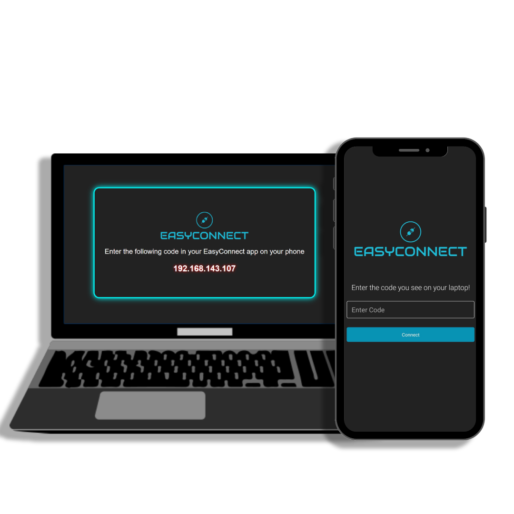

Project Type: Hackathon · Accessibility Tool
EasyConnect is a mobile-based automation tool designed during a hackathon to help beginners and elderly users control desktop functions with ease. It enables simple, tap-driven control of volume, brightness, searches, and more — all from a smartphone, with no prior technical experience required.
Many automation tools are built for technical users, requiring command-line usage or scripting. EasyConnect removes those barriers by focusing on intuitive UI, accessibility, and real-time responsiveness for everyday desktop tasks.
React Native, Flask, Python, Selenium (for desktop automation), REST APIs
 ← Back to Portfolio